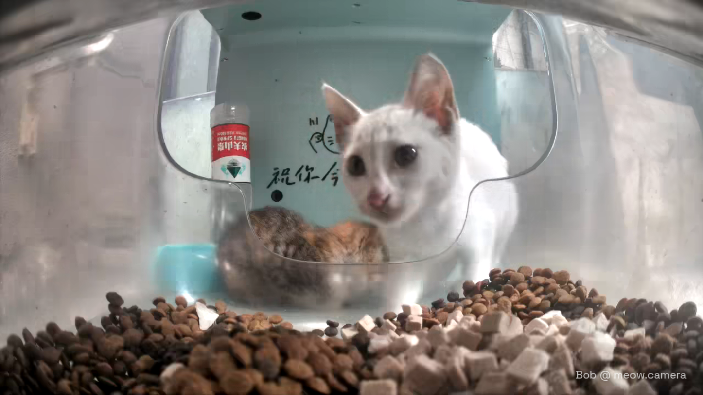
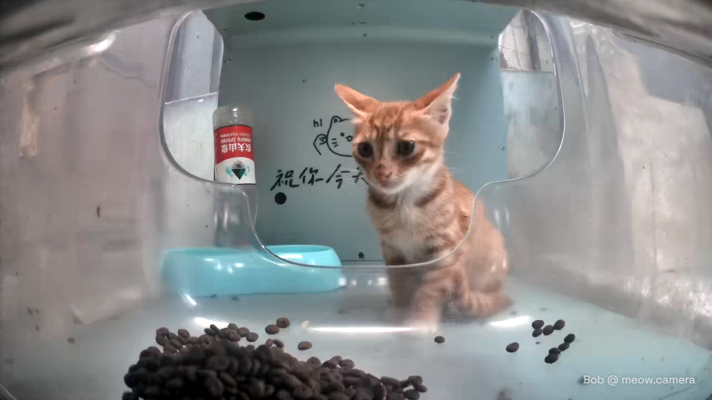

Hello Street Cat
哈啰街猫 or "Hello Street Cat" is an app developed by Guangxi Hachong Network Technology Co., Ltd. and launched in April 2023. This app strives to facilitate the feeding of stray cats, by the use of various "Intelligent Stray Cat Management Houses", which can record and stream video as well as dispense kibble, treats every time a user donates through the "Hello Street Cat" app. The main goals with this program is to Trap, Neuter, Return (TNR), feed strays, and encourage adoption.
by the way, I just copy pasted this from the Hello Street Cat Wiki.
you should watch and support Hello Street Cat because the cats are really cute and great!!
cat gallery

